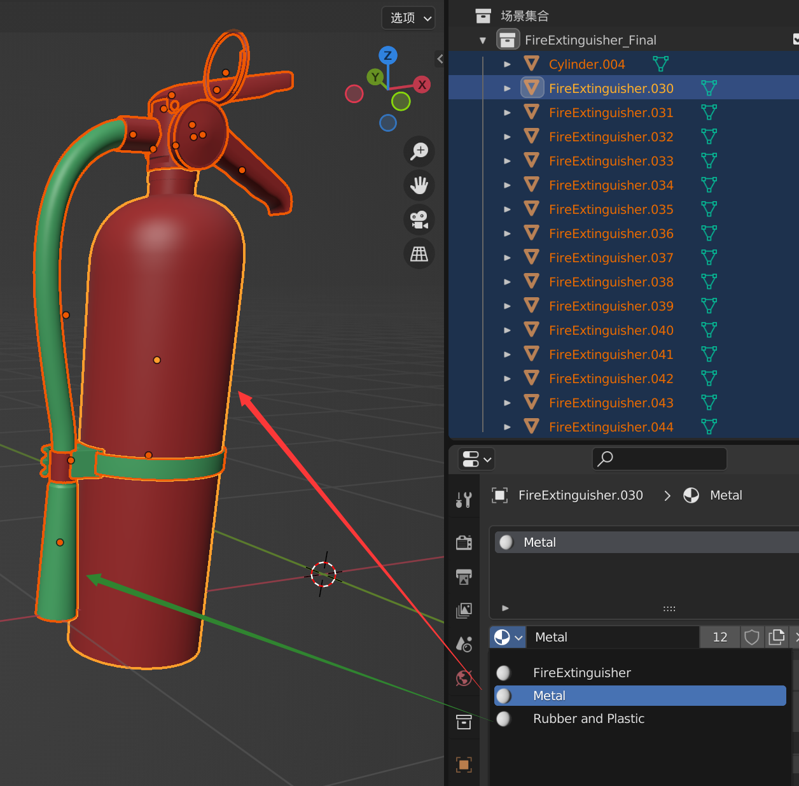

Substance Painter 小技巧
材质制作、UV处理、贴花融合等实用技巧
制作模型时尽可能把单独的模块分开
把材质按照金属和非金属大致分类并给默认材质。
使用同一个材质的模块排除功能
通过右键文件夹右方的"全部排除"功能，可以实现对应材质只在对应模型上使用的功能，数字1是选中的组件数量。

UV接缝处理
UV的接缝处时常会有问题，可以将映射模式更改为Tri-planar三面映射并调整硬度缓解。


基本颜色层次变化
基本颜色层次的变化可以仅仅通过三个不同颜色叠加而成。注意调整粗糙度、金属度、颜色、透明度等。


效果叠加技巧
两个不同的效果作用于同一位置时，上面的效果可以采用线性叠加和调整透明度的方法。

图层控制单一属性
图层可以通过选择控制单一属性，也可以选择对应通道后调整透明度，将会只调整选中的部分。

添加其他材质（如透明度）
在着色器设置中更改。

贴花融合技巧
降低明度、增加阴影、复制叠加、Grung paint streak贴图叠加。


透明区域设置
对透明区域单独复制一个材质，材质球修改混合模式为透明；开启双面显示；修改光照模式为表面半透明体积；透明通道存在BaseColor的A通道里。


导入UE材质金属感过强？
ORM贴图关闭SRGB，改为线性颜色。


颜色配置文件/色调映射/TAA